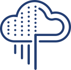

FORSITE AI POD

Используйте опыт создания самых больших в мире дата-центров с ИИ-инфрастукртой
Искусственный интеллект (AI) и глубокое обучение (DL) позволяют предприятиям бороться с мошенничеством, улучшать взаимоотношения с заказчиками, оптимизировать цепочки поставок и развивать инновационные продукты и сервисы на высококонкурентном рынке. Ваша компания может быть одной из многих, использующих решения на базе нейронный сетей для того, чтобы осуществить цифровую трансформацию и получить конкурентное преимущество. Однако, для того, чтобы извлечь максимум преимуществ из глубокого обучения, необходимо прежде всего решить несколько ключевых проблем.
-
Сборка и интеграция компонентов, таких как сервера, СХД и коммутаторы, приобретаемых по отдельности, увеличивает сложность и трудозатраты на внедрение. В результате, ценные ресурсы для исследователей данных простаивают.
-
Передовые практики для глубокого обучения рекомендуют, чтобы организации начинали с решений небольшого масштаба, и наращивали их по мере необходимости. Обычно, для AI задач используются сервера с внутренними дисками, чтобы максимально быстро подавать поток данных для обработки. Однако, масштабирование хранения с таким подходом невозможно без перебоев в работе.
Реализуйте возможности AI и DL, упростив, ускорив и интегрировав потоки обработки данных в архитектуре совместного эталонного решения ONTAP AI, разработанного совместно NetApp и NVIDIA, и включающего в себя суперкомпьютеры NVIDIA DGX, высокоскоростные коммутаторы и All Flash СХД NetApp A800 с NVMe архитектурой. ONTAP AI позволяет поставить на поток надежную и быструю подачу данных для обучения моделей и процессов распознавания образов.
ONTAP AI использует концепцию NetApp Data Fabric, чтобы объединить процесс управления данными на всем протяжении их жизненного цикла. Вы можете использовать единый набор инструментов для их безопасного контроля и защиты, не нарушая при этом регулирующих требований.
Если возникает проблема в окружении с нейронными сетями, то вы всегда сможете положиться на нашу проверенную модель поддержки с единым окном контакта, необходимой для решения проблем.
Быстрый темп инноваций усложняет дизайн эффективной AI инфраструктуры, но при помощи ONTAP AI вы можете избавиться от необходимости угадывать правильное решение, и сможете быстрее перейти к работе, благодаря проверенной эталонной архитектуре, распутывающей все проблемы.
Trident, драйвер обеспечивающий автоматизацию СХД NetApp в среде Kubernetes, ускоряет развертывание ONTAP AI, незаметным образом перенося ваши контейнерные образы в NetApp Flash СХД.
Быстрый темп инноваций усложняет дизайн эффективной AI инфраструктуры, но при помощи ONTAP AI вы можете избавиться от необходимости угадывать правильное решение, и сможете быстрее перейти к работе, благодаря проверенной эталонной архитектуре, распутывающей все проблемы.
Trident, драйвер обеспечивающий автоматизацию СХД NetApp в среде Kubernetes, ускоряет развертывание ONTAP AI, незаметным образом перенося ваши контейнерные образы в NetApp Flash СХД.
ONTAP AI позволяет начинать с малого и расти по мере необходимости. Вы можете добавлять вычислительную, сетевую составляющие, а также новую емкость без остановки текущих операций. Начав с соотношения серверов к СХД 1:1, можно нарастить количество серверов до 5 и более.
Архитектура NetApp позволяет начинать с небольших СХД A220 и наращивать их с сотен ТБ до Петабайт флэш емкости. Благодаря технологии ONTAP FlexGroup, емкость может быть увеличена до 20ПБ в едином пространстве имен, которое может справляться с более чем 400 млрд. файлов.
-
Обучающие циклы нейронных сетей нуждаются в массивных объемах вычислительной мощности. Более быстрая СХД, благодаря минимальным задержкам, позволит заметно ускорить обучение и повысить эффективность использования GPU серверов, сократив время ожидания отклика, которое заставляет процессоры работать вхолостую.
 -
Всего один сервер DGX-1 обеспечивает более 1ПФлопс вычислительной мощности ИИ, что является эквивалентом целого ЦОД-а традиционных серверов.
Инвестиции в современные сервера требуют и современных СХД, способных справляться с десятками тысяч обучающих образов в секунду.
Для этого вам понадобится высокопроизводительное решение по хранению, способное справиться с самыми требовательными нагрузками.

-
Тестирование ONTAP AI при помощи данных ImageNet при сочетании 4х серверов NVIDIA DGX-1 и 1 СХД NetApp A800, показало обучающую пропускную способность 23000 изображения в секунду (training images per second - TIPS) и распознавательную пропускную способность 60000 TIPS. С этой конфигурацией можно ожидать более 2ГБ/сек установившейся полосы пропускания (до 5ГБ/сек в пиках) при времени отклика СХД заведомо ниже 1 мсек и утилизации GPU более 95%.
-
Одна система A800 поддерживает пропускную способность более 25ГБ/с на последовательном чтении и более 1 миллиона IOPS на случайном чтении при времени отклика менее 500 мкс на файловых нагрузках (NAS). Эти результаты показывают доступную производительность, которая может снабдить потоком данных намного больше серверов DGX-1 по мере роста требований.